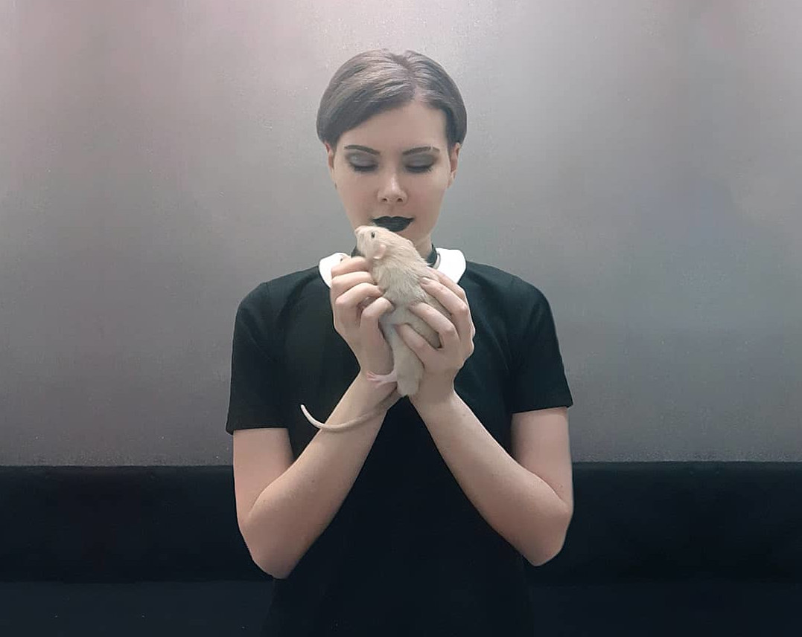
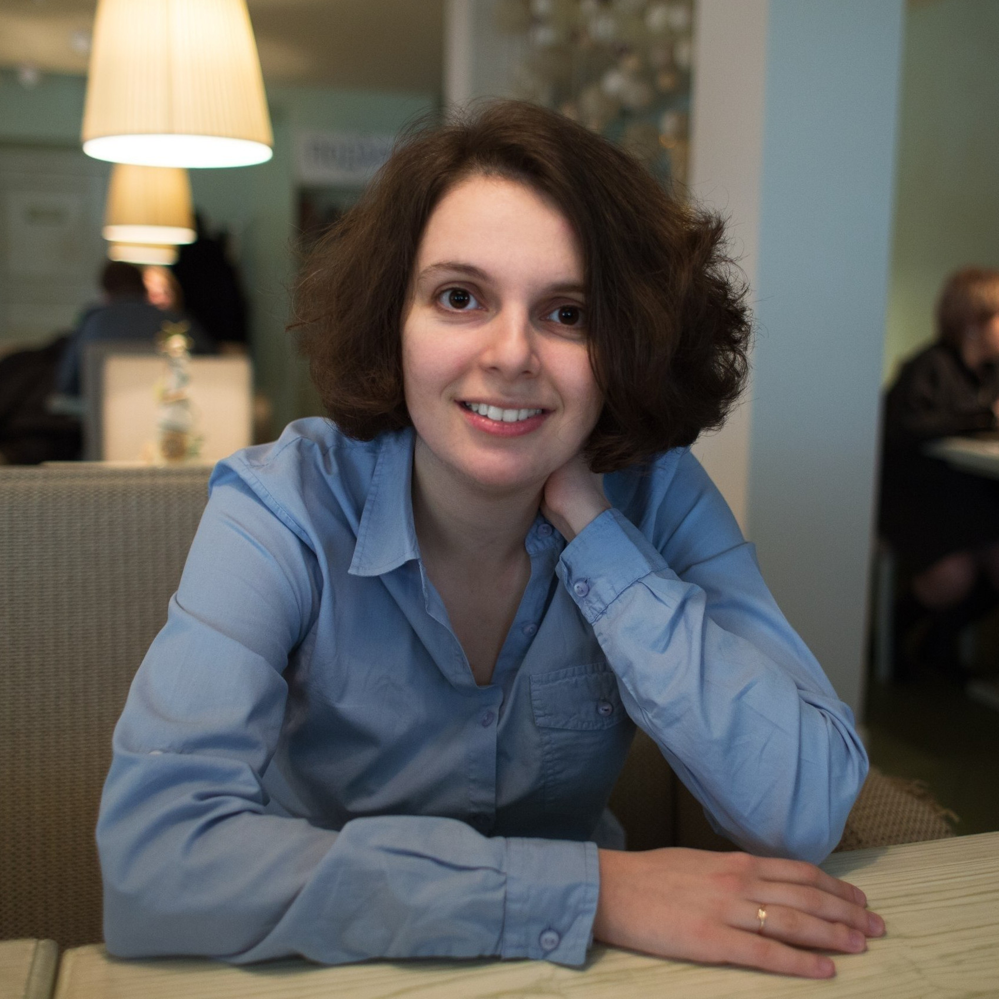

Сейчас, в период самоизоляции,
очень важно сохранить ментальное здоровье
и вовремя обратиться к специалисту до того,
как ситуация станет серьезной.
Поэтому я предлагаю услуги
психологического консультирования.

Я работаю с
депрессией
постоянно сниженное настроение
и полная или частичная утрата
способности получать удовольствие
,
тревожностью
склонность часто переживать сильную тревогу
,
паническими атаками
необъяснимые мучительные приступы тяжёлой тревоги,
сопровождаемые беспричинным страхом в сочетании с
различными физическими симптомами.
,
бессоницей
неспособность уснуть и/или плохое качество сна,
постоянное ощущение недостатка сна
, зависимостями ( наркотической патологическое влечение к употреблению наркотических веществ, часто сопровождающееся различными расстройствами. , алкогольной пристрастие к алкоголю с психической и физической зависимостью от него и любовной болезненная сильная страсть, зависимость от романтических отношений с человеком ).
Вы можете обратиться ко мне, если вы думаете, что у близкого вам человека есть такие проблемы. Часто семья или друзья хотят помочь, но не знают, как, и в худшем случае предпринимают действия, которые могут навредить.
Также я работаю с
токсичными взаимодействие между людьми, приносящее эмоциональную боль и истощение ресурсов как минимум одной из сторон. , абьюзивными уничижительные взаимоотношения, которые сопровождаются постоянными манипуляциями (например, с помощью денег, шантажа, угроз и рукоприкладства), а также моральным издевательством со стороны агрессора. и созависимыми нездоровая привязанность одного человека к другому отношениями - притом как с жертвой (которой могу помочь обрести субъектность), так и с абьюзером (который на самом деле страдает не меньше, но в ином ключе).
Параллельно с личной терапией я прохожу супервизию консультации, на которых психолог обсуждает клиентов с коллегой для своевременного выявления недочетов в работе .
токсичными взаимодействие между людьми, приносящее эмоциональную боль и истощение ресурсов как минимум одной из сторон. , абьюзивными уничижительные взаимоотношения, которые сопровождаются постоянными манипуляциями (например, с помощью денег, шантажа, угроз и рукоприкладства), а также моральным издевательством со стороны агрессора. и созависимыми нездоровая привязанность одного человека к другому отношениями - притом как с жертвой (которой могу помочь обрести субъектность), так и с абьюзером (который на самом деле страдает не меньше, но в ином ключе).
Параллельно с личной терапией я прохожу супервизию консультации, на которых психолог обсуждает клиентов с коллегой для своевременного выявления недочетов в работе .
Ко мне можно обратиться, если нет очевидных проблем,
но есть чувство неудовлетворенности от жизни, ощущение
запутанности. Если в отношениях все было хорошо,
а теперь не очень, и непонятно, что случилось.
Вопреки популярному мнению, гласящему,
что психолог не работает без запроса,
я считаю, что, напротив, одна из самых важных задач психолога
- на самой первой сессии помочь клиенту сформировать запрос.
Немного о моём опыте
Я занимаюсь психологией с 2014 года, и за это время я приобрела широкий круг компетенций. За 6 лет я на себе освоила когнитивно-поведенческую терапию, краткосрочное, сфокусированное на навыках лечение, направленное на изменение неадаптивных эмоциональных реакций при помощи изменения мыслей, изменения поведения пациента либо изменения того и другого а сейчас я углубилась в функциональный анализ поведения, выделение факторов окружающей среды, влияющих на формирование поведения который в отдельных кейсах показывает себя лучше, чем КПТ. Также во многих аспектах я использую феноменологический подход подход, где главным является не поведение, а содержание воспринимающего и переживающего сознания: что я у себя в сознании вижу и как я это переживаю и критическое мышление. система суждений, которая используется для анализа вещей и событий с формулированием обоснованных выводов У меня больше 110 часов личной терапии (для практикующего психолога минимум - 50). В данный момент я учусь на психолога в РАНХиГС и регулярно читаю статьи и книги по своей специальности.Чем я НЕ занимаюсь?
Я не работаю с расстройствами шизофренического спектра, деменцией различного генеза, расстройствами аутического спектра, коммуникативными расстройствами, а также с людьми младше 16 лет.Если я почувствую, что с вашим запросом я эффективно работать не могу, то я направлю вас к другому специалисту.
В период карантина
консультации будут проходить по Skype и Zoom. Обязательно наличие камеры и гарнитуры у клиента, так как во время консультации очень важно качественно передать изображение и звук: для терапевта мимика и интонации - это серьезный источник информации.Цены
Дистанционная консультация стоит 1500 российских рублей. Продолжительност 55 минут.
Очная консультация стоит 2000р/55 минут. Территориально: Москва, Чистые пруды
Вернуться к моим контактамОтзывы
(орфография и пунктуация в отзывах сохранены)
Слава Лювалин
XLNT agency

Анна Кушнирская
Психолог
Анонимный отзыв